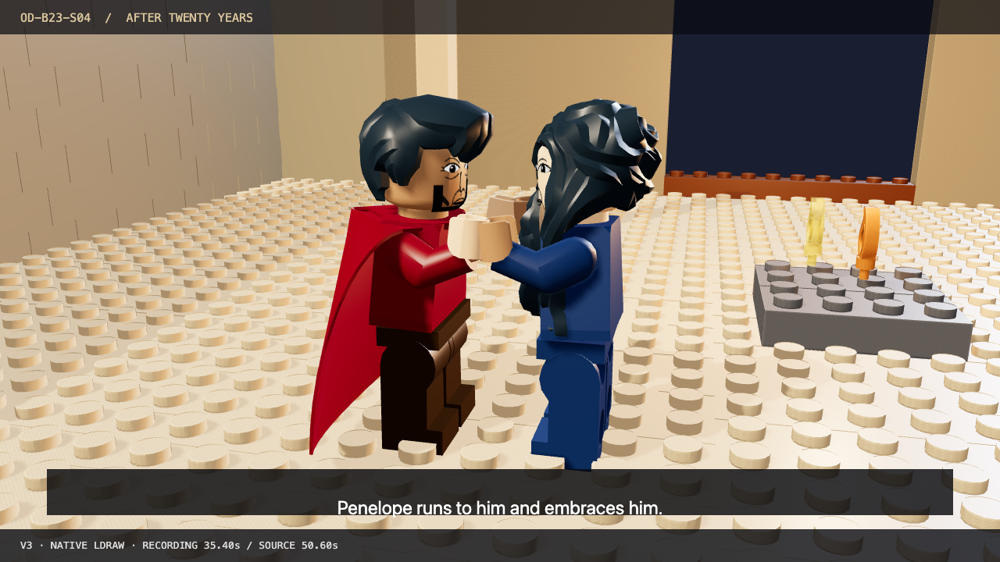
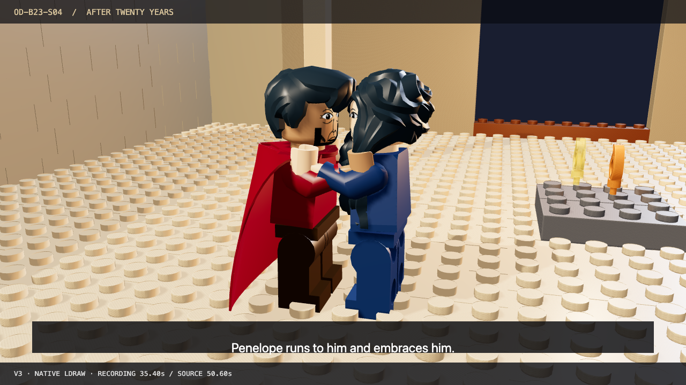

THE ODYSSEY IN LEGO BRICKS · OD-B23-S04
The Bed Test
A complete 55-second native production proof, developed through three full passes.
Movie ready
v3 · 1280 × 720 · 12 fps · original recording preserved intact. Four other selected scenes remain unrendered. Human listening and artistic approval remain open.
Source and result at the same beat
Recording time and Halfworld animation time differ. These pairs follow the explicit beat mapping.
The repairs are visible

Contact diagnostic: the figures hold hands at 50 LDU separation.
v3: closer embrace at 34 LDU separation, within native joint limits.Earlier complete movies
v1 retains the observed timing, color and contact failures. v2 is the intermediate repair.
What remains
The set is sparse, the recorded performance is abridged, and mouth animation is simple. The next challenge is the Cyclops' shared stake and giant-scale interaction. See the ledger for the evidence and limits.